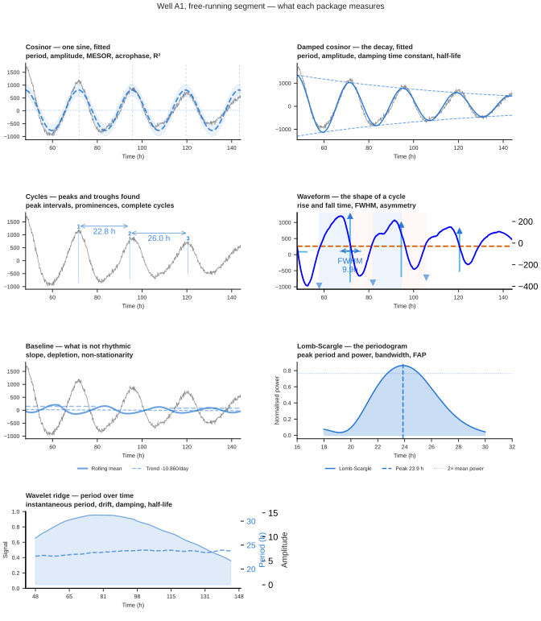
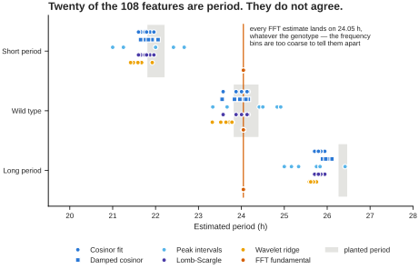
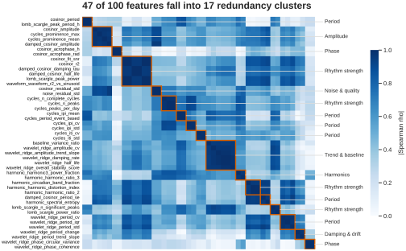
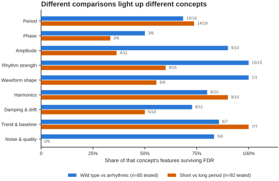

Feature extraction¶
Most circadian tools give you a period and a p-value. Chronotopia gives you about a hundred numbers per sample, each one named, described, and grouped by what it actually measures — then the machinery to work out which of them you can trust.
The extraction itself is the easy part. What makes it usable is everything around it: a dictionary that says what each number means, a flag separating biology from recording metadata, redundancy clustering so you know which features are really the same measurement, a differential comparison that corrects across the whole matrix rather than the one feature you happened to look at, and per-sample context so a raw value becomes interpretable.
The numbers on this page are real
Every figure and every count below comes from running the extractor over the long-series tutorial dataset — 24 wells, four days of free-run, detrended. You can reproduce all of it, and CI checks that the page still matches the code.
Nine packages, one pass¶
A package is a family of related measurements sharing a computation. Running one sample through all nine costs a single pass over the trace.

Well A1 from the long-series tutorial, free-running segment. The overlays are drawn by the extractor's own plotting methods, so this is the app's view rather than an illustration.
| Package | What it does | Features |
|---|---|---|
cosinor |
Fits one sinusoid by least squares | 9 |
damped_cosinor |
Fits a sinusoid with a decay term, so damping is measured rather than removed | 8 |
waveform |
Geometry of an averaged cycle — rise, fall, width, asymmetry | 11 |
cycles |
Finds individual peaks and troughs, measures the intervals | 14 |
baseline |
The non-rhythmic part — slope, depletion, stationarity | 9 |
harmonic |
FFT spectrum: fundamental, 12 h and 8 h components, entropy | 10 |
noise |
Residual after the rhythm is removed; signal-to-noise, usable fraction | 9 |
lomb_scargle |
Periodogram peak, its power, width and false-alarm probability | 8 |
wavelet_ridge |
Instantaneous period and amplitude along the ridge, over time | 26 |
Plus four meta_* columns describing the recording itself. 108 features in
total on a long recording.
Short recordings get 74 features, not 108
A recording of 48 h or less, or fewer than 20 points, is routed away from
wavelet_ridge and damped_cosinor — you cannot track a ridge through two
cycles, and a damped sinusoid has five free parameters that two cycles cannot
separate. The short-series tutorial data yields 74
features rather than 108.
This matters for a mixed cohort. If some samples are short and some are long, the wavelet features exist but are missing for the short ones, and that missingness correlates with recording length. Feed that to a classifier and it can score well by learning how long each sample was recorded for. The quality page below flags it.
Ten concepts, and a role¶
The package tells you which code produced a number. The concept tells you what it measures — which is what you actually want when you are deciding what to report.
| Concept | Features | What it covers |
|---|---|---|
| Period | 20 | How long one cycle lasts, and how steady that is |
| Rhythm strength | 17 | How convincingly the trace oscillates at all |
| Damping & drift | 12 | Period drifting and amplitude damping across the run |
| Amplitude | 11 | How large the oscillation is, and how stable that size is |
| Harmonics | 10 | Energy at 12 h and 8 h, spectral complexity |
| Noise & quality | 10 | Residual noise, signal-to-noise, usable fraction |
| Waveform shape | 9 | Rise and fall times, width, asymmetry |
| Trend & baseline | 9 | Slope, depletion, non-stationarity |
| Phase | 6 | When in the cycle the peak falls |
| Recording | 4 | Duration, number of points, sampling interval |
Nothing falls through to "Other". Every one of the 108 features has a concept, a
one-line description, and a role — biology or recording.
The role flag exists because of leakage¶
A hundred and four features describe the biology. Four describe the recording: duration, number of points, sampling interval, and a short-series flag. They are perfectly correlated with each other and useful for QC.
They are also a leakage risk. If your conditions happen to differ in how long
they were recorded — because one plate ran overnight and another did not — a
model given meta_duration_h can score well without ever looking at a rhythm.
Chronotopia flags rather than drops. Every column stays in the export; the role is a label; the caller decides. The differential comparison and the feature page both surface the role, so the decision is at least an informed one.
Twenty features are period, and they disagree¶
This is the part worth internalising. Six independent estimators of period sit in that concept, and they are not interchangeable.

Each dot is one well; the grey band is the range of periods actually planted in that genotype. Most of the estimators recover the genotype ordering. One does not.
Error against the planted period, over the 18 rhythmic wells:
| Estimator | Feature | Median error | Worst well |
|---|---|---|---|
| Damped cosinor | damped_cosinor_period |
0.30 h | 0.47 h |
| Cosinor fit | cosinor_period |
0.29 h | 0.63 h |
| Lomb-Scargle | lomb_scargle_peak_period_h |
0.29 h | 0.63 h |
| Peak intervals | cycles_period_event_based |
0.47 h | 1.47 h |
| Wavelet ridge | wavelet_ridge_period_mean |
0.61 h | 0.76 h |
| FFT fundamental | harmonic_fundamental_period_h |
1.97 h | 2.42 h |
Read the two columns together. On the typical well the top three are indistinguishable; where they differ is the worst well, and that is usually what decides whether a genotype difference survives. The damped cosinor is the only one of the six that writes the decay into the model instead of treating it as noise, which is why its bad cases are less bad — a decaying rhythm broadens a periodogram peak, and a broad peak is where the other estimators lose wells.
The FFT fundamental returns 24.05 h for every genotype — short, wild type and long alike. Over a 96 h window the FFT's frequency bins are ~1.4 h apart near 24 h, so all three genotypes fall in the same bin. A reader who picked that feature as "the period" would conclude the mutants are identical to wild type.
Nothing in the number itself tells you this. The dictionary tells you the six are the same concept; comparing them tells you which to trust. When the estimators in a concept disagree, that disagreement is the result — it is telling you the recording does not constrain the quantity as well as a single number suggests.
Features do not refuse
The six arrhythmic wells still produce a cosinor_period — around 20.4 h,
fitted to noise. Every feature returns a number for every sample. Gate on
the Rhythm strength concept (cosinor_r2, lomb_scargle_fap,
cycles_n_complete_cycles) before believing anything in Period, Phase or
Amplitude.
Feature quality, before you use any of it¶
The Feature quality view answers three questions about the matrix you just built, before you analyse it.
What is constant? On this dataset, 13 of the 108 features take a single
value across all 24 wells — cosinor_p_value and lomb_scargle_fap are floored
at zero for every well, the four meta_* columns are identical by construction,
and several booleans never vary. A constant column carries no information and
will silently break a correlation or a t-test. 95 features are usable.
What is missing? Eleven features have gaps. On a cohort of mixed recording length that number climbs sharply, and the missingness is structural rather than random — see the warning above.
What is redundant?

Absolute Spearman correlation among the clustered features, ordered by cluster. Blocks outlined in orange are groups where every pair correlates at |rho| ≥ 0.95.
Forty-seven of the 108 features fall into 17 clusters. Two of them hold six
features each. One is a rhythm-strength block — cosinor_r2, cosinor_fit_snr,
lomb_scargle_peak_power, waveform_waveform_r2_vs_sinusoid and both damping
measures — which on this data is one question ("is this trace a clean sinusoid?")
wearing six names. The other is a damping and baseline block from the wavelet
ridge.
That matters in two ways. Reporting six correlated features as six findings overstates your evidence. And feeding all six to a model that assumes independence — or ranking feature importances across them — will spread one signal across six columns and make each look weak.
The clusters are computed on your data, not asserted in advance. Two features that are redundant in a clean plate experiment may separate on noisier material.
Comparing conditions, all features at once¶
The Compare conditions view runs every feature across two groups in one pass, with the multiple-testing correction applied across the whole set.

Share of each concept's features that survive FDR correction, for two different comparisons of the same 24 wells. Wild type against arrhythmic moves every rhythm-strength feature; short against long period moves most of Period and both acrophase features, while rhythm strength barely responds — those genotypes are equally rhythmic, just at different periods.
Where does one sample sit?¶
This is the Sample Insights view in the app.
A raw feature value is not interpretable on its own. Nobody knows whether
baseline_depletion_index = 0.42 is normal. A percentile against the other
samples in the same experiment is interpretable immediately.
Cohort context gives, for a chosen sample, every feature's value, its percentile within the cohort, the cohort median, and an extremity score. Asking about well C3 in the tutorial plate returns its period features at the 98th percentile — correct, since C3 is a long-period well among a plate that is mostly not.
This is the view for "is this well odd, and in what way", which is a different question from "do these two groups differ".
Per-sample QC¶
QC flags applies five threshold rules and returns a verdict per sample with the reasons attached, rather than a bare number:
| Rule | Fires when |
|---|---|
| Too few cycles | fewer than 2 complete cycles — period and amplitude are not estimable |
| Poor rhythm fit | cosinor_r2 below 0.05 |
| Flat trace | dynamic range in the bottom 2% of the cohort |
| High noise | residual noise above the cohort's 95th percentile |
| Strong drift | more than half the variance is a monotonic trend |
Read the QC verdicts with care in v0.8.0
The rules are thresholds on raw-scale quantities, and on this dataset none of the three that fire identify the six wells that genuinely have no rhythm.
- The verdict flips depending on whether you detrended. On raw traces
every well trips Strong drift, because a decaying baseline is normal for
a luciferase recording rather than a defect — 0 of 24 wells pass. On
detrended traces Strong drift never fires, but Flat trace uses
(max − min) / |mean|, and the mean of a detrended trace is near zero, so the ratio is dominated by that near-zero denominator. It ranks the arrhythmic wells as having more dynamic range than wild type. cosinor_r2 < 0.05is too lax to catch the arrhythmic wells, which sit at 0.12–0.17.cycles_n_complete_cyclescounts peaks found in noise, so arrhythmic wells report 4–6 cycles while clean wild-type wells report 1–2.
Use the Rhythm strength concept directly for now — cosinor_r2 around 0.8
versus 0.14 separates these groups cleanly. This is tracked in the
changelog.
Note that QC is about trace quality, not rhythmicity. An arrhythmic well is a result, not a defect, and should not be flagged as one.
Two more views that use the same model¶
Two entries in the plot picker share the random-forest classifier described under Rhythmicity testing, rather than the feature matrix on this page.
Rhythmicity Model Evaluation runs the classifier over every sample and breaks
the result down by verdict and confidence — True high through False high — so
you can see how much of a plate the model is confident about before you rely on
it. With a layout uploaded, one condition can be selected at a time.
PCA puts the raw traces through a standard-scaler and two principal components, then colours each sample by that same classifier verdict and confidence. It answers a different question from the volcano: not "which features differ" but "do the samples separate at all, and does the model's opinion line up with the separation". The axis labels carry the explained variance of each component.
Neither view is a statistical test. Treat both as ways of looking at the classifier's output, and gate anything you report on the tests above.
Every control in both is described in the control reference.
Getting the numbers out¶
Everything on the Feature page exports as CSV: the full matrix, the data dictionary (feature, concept, package, role, description), the quality report, the redundancy clusters, and the comparison results with effect sizes and q-values.
The dictionary is worth shipping alongside any analysis you publish. It is the
difference between a reviewer being able to check what waveform_fwhm_relative
means and having to guess.
Where to go next¶
- Tutorial 1 uses the Phase and Amplitude concepts on a 13-timepoint omics series, where period is not recoverable.
- Tutorial 2 uses Period, Damping & drift and the plate overlays on a six-day reporter recording.
- Citing Chronotopia covers what to record in a methods section so a feature-based result can be repeated.